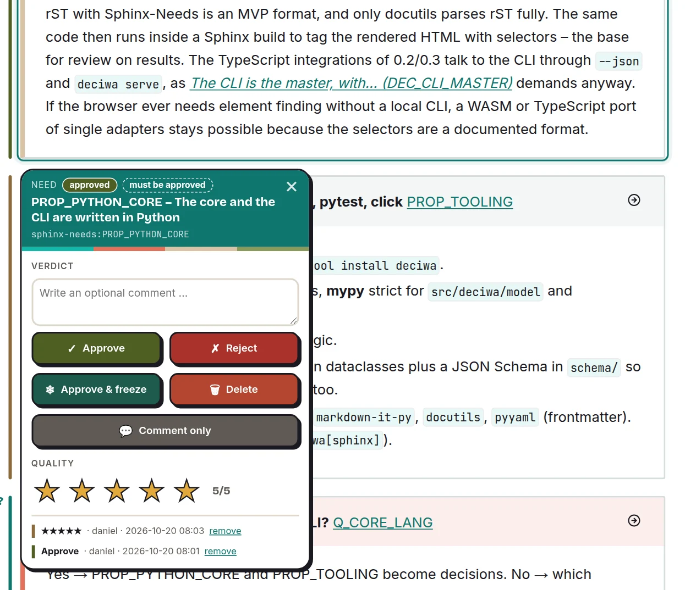
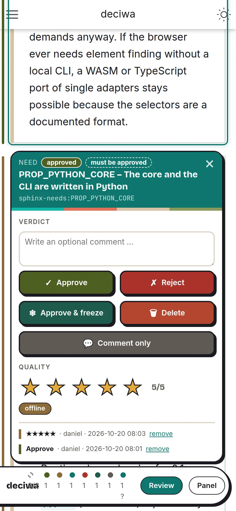
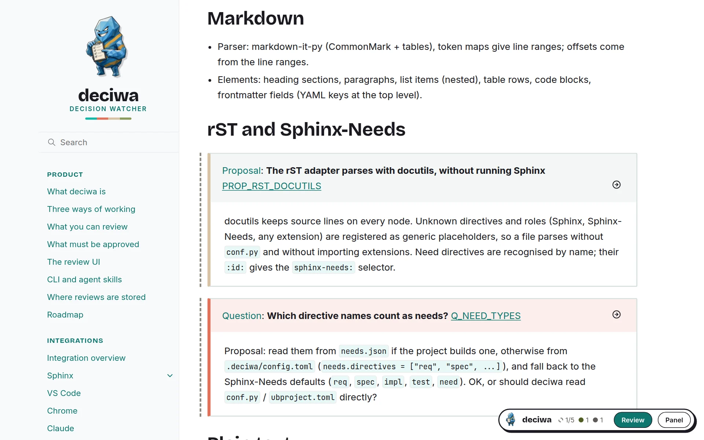
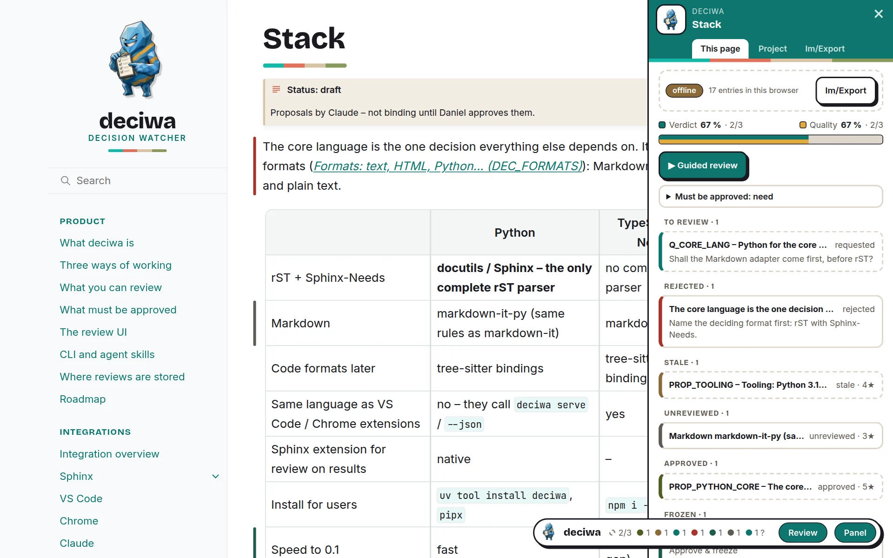

The review UI¶
The same UI in every integration; colours and fonts are the danwos ones (deciwa uses the danwos colo... (DEC_DANWOS_TOKENS)).
The deciwa button¶
A round deciwa logo sits at the bottom right. Hover it to see the counters and the two switches:
Review – turns reviewing on: hover outlines, the feedback card and the keys. Off by default, so the page reads normally.
Panel – the list of all feedback.
While review or the panel is on, the button stays open.
Feedback card¶
Click an element (or press a key while hovering it) to open its card at the element (Feedback card at the elemen... (DEC_FEEDBACK_CARD)) – beside the text when there is room, otherwise below it, above only at the end of the page; it never covers the element:
a bar with the element, its state and whether it must be approved,
a question the AI asked about it – answer yes, no or in words,
Verdict – an optional comment, then approve, reject, approve & freeze, delete – the comment goes with the verdict – or Comment only to save the comment without a verdict,
Quality – zero to five stars,
the history, with the old wording of changed texts.
Drag the card by its bar if it is in the way; the next card opens at its
usual place again. A click next to the content, Esc or × closes the card.
While reviewing, a click on an element always opens its card, also when the
element is a link or contains one; Ctrl/Cmd + click follows the link.
Links outside the content, like the navigation, work as usual.


The card of an approved need: comment, verdicts, stars and its history.¶
On phones and tablets¶
Tap instead of hover: tap the deciwa logo for the switches, tap an element for its card, tap next to it to close. Buttons and stars are larger, keys are not shown, and the panel takes the whole screen – choosing an entry closes it and opens the card.


On a phone: tap an element, the card opens below it.¶
Keys¶
Key |
Does |
|---|---|
|
approve |
|
reject |
|
approve & freeze |
|
delete |
|
quality stars |
|
write a comment |
|
comment only – save the comment without a verdict |
|
select the parent element |
|
follow a link instead of reviewing |
|
guided review on/off |
|
next / previous open element |
|
review on/off |
|
panel on/off |
|
close the card |
Guided review¶
▶ Guided review in the panel (or v) walks through every element that
must be approved and has no verdict yet: the card opens on the first one,
and after each verdict the next one follows – on this page, then on the
next pages. j / k skip forward and back (also without guided review);
Stop guided in the panel or v ends it. Stars
and notes do not move on; it stays on across pages until you stop it.

Guided review: the card is on the next element without a verdict.¶
State bars¶
A coloured bar beside each element with feedback shows its state; a ?
marks an open question; a grey dashed line marks an element that must still
be approved.

Coloured bars for reviewed elements, grey dashed lines for required ones that are still open.¶
Panel¶
This page – a bar with two shares of the required elements (with a verdict, with stars), the review rules, what still has no verdict and all feedback of the page, grouped by state.
Project – the same for every page, with a click jumping to the element on its page.
Im/Export – download all review data of the project as one deciwa file, look into it with Show, or load one: the panel shows what is in it (export time, last change, entries, authors, sources) before it replaces the current data. With a server everything is saved already; without one, this is how a review leaves the browser – see offline review.
The panel stays open across pages.

This page – verdict and quality coverage, review rules, what is still open.¶

Project – every page with what is open; a click jumps there.¶

Im/Export – export, show or load a deciwa file.¶